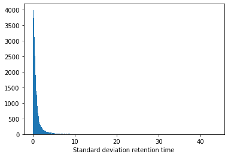
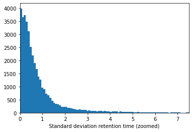
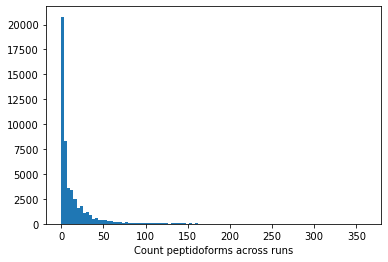
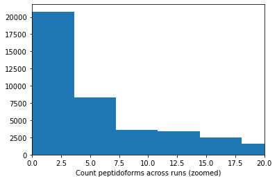
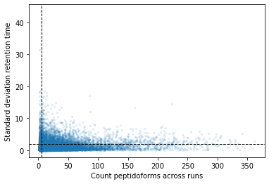

Requirement already satisfied: pygam in c:\users\robbin\anaconda3\envs\py310\lib\site-packages (0.8.0)
Requirement already satisfied: numpy in c:\users\robbin\anaconda3\envs\py310\lib\site-packages (from pygam) (1.23.3)
Requirement already satisfied: progressbar2 in c:\users\robbin\anaconda3\envs\py310\lib\site-packages (from pygam) (4.0.0)
Requirement already satisfied: scipy in c:\users\robbin\anaconda3\envs\py310\lib\site-packages (from pygam) (1.9.1)
Requirement already satisfied: future in c:\users\robbin\anaconda3\envs\py310\lib\site-packages (from pygam) (0.18.2)
Requirement already satisfied: python-utils>=3.0.0 in c:\users\robbin\anaconda3\envs\py310\lib\site-packages (from progressbar2->pygam) (3.3.3)
Requirement already satisfied: tqdm in c:\users\robbin\anaconda3\envs\py310\lib\site-packages (4.64.1)
Requirement already satisfied: colorama in c:\users\robbin\anaconda3\envs\py310\lib\site-packages (from tqdm) (0.4.5)
from collections import Counterimport osfrom pygam import LinearGAM, s, ffrom matplotlib import pyplot as pltimport pandas as pdimport numpy as npfrom scipy.stats import pearsonr, spearmanrfrom tqdm import tqdmimport warningswarnings.filterwarnings("ignore")
In this tutorial you will learn how to go from MaxQuant evidence files to a data set that is ready for training a retention time prediction model. Retention time is the time it takes for an analyte travels through a column. The travel time depends on the interaction with the stationary phase (usually C18 for proteomics) and mobile phase. Where the mobile phase consists of solvents and changes in physicochemical properties over time with a predefined gradient. The stationary phase remains the same over time. This allows for peptides to elude at different time points, e.g., when it prefers to interact with the mobile phase at a certain percentage of the hydrophobic solvent.
The retention time between different runs can differ significantly and depending on the abundance of the precusor calling the elution apex can be difficult. This means we need to preprocess the data before it is used for machine learning.
Reading and formatting input data
We will not need all the columns, define those that might be useful:
As you can see in this example there are many of the same peptidoforms (minus charge) for the different runs. We will want to create a single value for each peptidoform per run in a matrix instead of a single peptidoform+run combo per row.
retention_dict = {}# Group by the raw filefor gidx,g in evid_df.groupby("Raw file"):# Group by peptidoform and take the mean for each group retention_dict[gidx] = g.groupby("Modified sequence").mean()["Calibrated retention time"].to_dict()#Transform the dictionary in a df where each row is a peptidoform and each column a runretention_df = pd.DataFrame(retention_dict)retention_df
We can penalize the absence the absence of highly abundant peptidoforms per run (lower = more abundant peptidoforms present) by taking the dot product of presence/absence in the matrix and the above absence scores:
The first step after reading and loading the data is to align retention times between runs. Here we will use splines in a GAM for that. The algorithm below follows these steps:
Iterate over all runs, sorted by the earlier defined penalty score
Obtain the overlapping peptidoforms between runs
If there are less than 20 peptidoforms skip that run
Divide the overlapping peptides into equidistant bins and enforce a percentage of the bins to be filled with a least one peptidoform (now 200 bins and 75 % occupancy). If requirements are not met skip that run.
Fit the GAM with splines between the reference set and the selected run
Calculate the error between aligned and values in the reference set. If selected it will run a second stage of the GAM filtering out any data points that were selected to have an error that is too high
Assign aligned values to a new matrix
Change the reference dataset to be the median of all aligned runs and the initial reference run
In the next code block we will define two kinds of plots, first a performance scatter plot. Here we plot the retention time of the selected set against the reference set; before and after alignment. Next is the residual plot that subtracts the diagonal from the performance scatter plot and essentially shows the errors before and after alignment. The residual plot is generated for both the first and second stage GAM.
def plot_performance(retention_df,run_highest_overlap_score,align_name,non_na_sel): plt.scatter( retention_df[run_highest_overlap_score][non_na_sel], retention_df[align_name][non_na_sel], alpha=0.05, s=10, label="Reference+selected set unaligned" ) plt.scatter( retention_df[run_highest_overlap_score][non_na_sel], gam_model_cv.predict(retention_df[align_name][non_na_sel]), alpha=0.05, s=10, label="Reference+selected set aligned" ) plt.plot( [min(retention_df[run_highest_overlap_score][non_na_sel]),max(retention_df[run_highest_overlap_score][non_na_sel]) ], [min(retention_df[run_highest_overlap_score][non_na_sel]),max(retention_df[run_highest_overlap_score][non_na_sel]) ], c="black", linestyle="--", linewidth=1.0 ) plt.xlabel("Retention time reference set") plt.ylabel("Retention time selected set") leg = plt.legend()for lh in leg.legendHandles: lh.set_alpha(1) plt.show()def plot_residual(run_highest_overlap_score,align_name,non_na_sel,title="Residual plot"): plt.scatter( retention_df[run_highest_overlap_score][non_na_sel], retention_df[align_name][non_na_sel]-retention_df[run_highest_overlap_score][non_na_sel], alpha=0.05, s=10 ) plt.scatter( retention_df[run_highest_overlap_score][non_na_sel], gam_model_cv.predict(retention_df[align_name][non_na_sel])-retention_df[run_highest_overlap_score][non_na_sel], alpha=0.05, s=10 ) plt.title(title) plt.axhline( y =0.0, color ="black", linewidth=1.0, linestyle ="--" ) plt.ylabel("Residual") plt.xlabel("Retention time reference") plt.show()
#constraints = "monotonic_inc"constraints ="none"# Align parametersperform_second_stage_robust =Trueerror_filter_perc =0.005num_splines =150min_coverage =0.75coverage_div =200plot_res_every_n =100min_overlap =20run_highest_overlap_score = score_per_run.sort_values(ascending=True).index[0]unique_peptides = []unique_peptides.extend(list(retention_df[retention_df[run_highest_overlap_score].notna()].index))retention_df_aligned = retention_df.copy()keep_cols = [run_highest_overlap_score]error_filter_perc_threshold =max(retention_df[run_highest_overlap_score])*error_filter_perc# Iterate over runs sorted by a penalty score# For version 3.8 or later uncomment the for loop below and comment the other for loop; also uncomment the line after update progressbar#for idx,align_name in (pbar := tqdm(enumerate(score_per_run.sort_values(ascending=True)[1:].index))):for idx,align_name in tqdm(enumerate(score_per_run.sort_values(ascending=True)[1:].index)):# Update progressbar#pbar.set_description(f"Processing {align_name}")# Check overlap between peptidoforms non_na_sel = (retention_df[align_name].notna()) & (retention_df[run_highest_overlap_score].notna())# Continue if insufficient overlapping peptidesiflen(retention_df[run_highest_overlap_score][non_na_sel].index) < min_overlap:continue# Check spread of overlapping peptidoforms, continue if not sufficientif (len(set(pd.cut(retention_df[align_name][non_na_sel], coverage_div, include_lowest =True))) / coverage_div) < min_coverage:continue# Fit the GAM gam_model_cv = LinearGAM(s(0, n_splines=num_splines), constraints=constraints, verbose=True).fit( retention_df[align_name][non_na_sel], retention_df[run_highest_overlap_score][non_na_sel])# Plot results alignmentif idx % plot_res_every_n ==0or idx ==0: plot_performance( retention_df, run_highest_overlap_score, align_name, non_na_sel ) plot_residual( run_highest_overlap_score, align_name, non_na_sel )# Calculate errors and create filter that can be used in the second stage errors =abs(gam_model_cv.predict(retention_df[align_name][non_na_sel])-retention_df[run_highest_overlap_score][non_na_sel]) error_filter = errors < error_filter_perc_threshold# Perform a second stage GAM removing high error from previous fitif perform_second_stage_robust: gam_model_cv = LinearGAM(s(0, n_splines=num_splines), constraints=constraints, verbose=True).fit( retention_df[align_name][non_na_sel][error_filter], retention_df[run_highest_overlap_score][non_na_sel][error_filter])if idx % plot_res_every_n ==0or idx ==0: plot_residual( run_highest_overlap_score, align_name, non_na_sel, title="Residual plot second stage GAM" )# Write alignment to new matrix retention_df_aligned.loc[retention_df[align_name].notna(),align_name] = gam_model_cv.predict(retention_df.loc[retention_df[align_name].notna(),align_name]) unique_peptides.extend(list(retention_df[retention_df[align_name].notna()].index)) keep_cols.append(align_name)# Create reference set based on aligned retention times retention_df["median_aligned"] = retention_df_aligned[keep_cols].median(axis=1) run_highest_overlap_score ="median_aligned"
If we look at the standard deviation we can see that this is still relatively large for some peptidoforms:
plt.hist(retention_df_aligned[keep_cols].std(axis=1),bins=500)plt.xlabel("Standard deviation retention time")plt.show()plt.hist(retention_df_aligned[keep_cols].std(axis=1),bins=500)plt.xlim(0,7.5)plt.xlabel("Standard deviation retention time (zoomed)")plt.show()


In addition to the std there is another factor that can play a big role, the amount of times a peptidoform was observed:
plt.hist(retention_df_aligned[keep_cols].notna().sum(axis=1),bins=100)plt.xlabel("Count peptidoforms across runs")plt.show()plt.hist(retention_df_aligned[keep_cols].notna().sum(axis=1),bins=100)plt.xlabel("Count peptidoforms across runs (zoomed)")plt.xlim(0,20)plt.show()


If we plot both values against each other we get the following plot (the lines indicate possible thresholds):
plt.scatter( retention_df_aligned[keep_cols].notna().sum(axis=1), retention_df_aligned[keep_cols].std(axis=1), s=5, alpha=0.1)plt.ylabel("Standard deviation retention time")plt.xlabel("Count peptidoforms across runs")plt.axhline( y =2.0, color ="black", linewidth=1.0, linestyle ="--")plt.axvline( x =5.0, color ="black", linewidth=1.0, linestyle ="--")plt.show()

If we set a threshold for a minimum of 5 observations and a maximum standard deviation of 2 we get the following final data set. Here we take the median for each peptidoform across all runs:
![]()